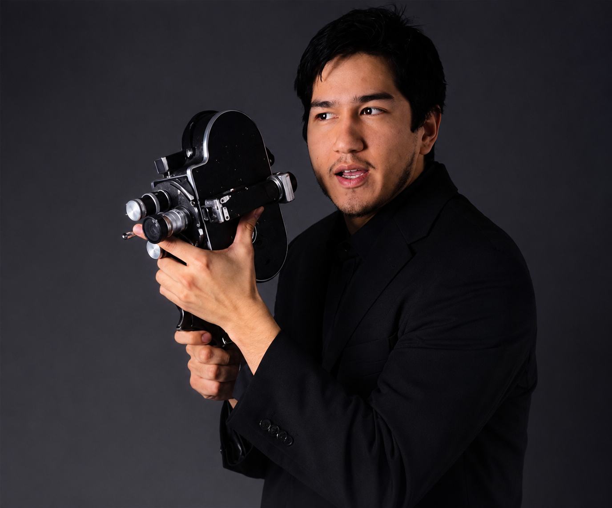

Artist / Biography
Christian O. Reyes

Your local California filmmaker, photographer, editor, and screenwriter based in Jurupa Valley.
I earned a Bachelor of Arts in Film from California Baptist University in 2026. My production background includes narrative shorts, interviews, camera support, editing, AV production, music venues, and more than 100 live events.
I grew up paying attention to the way people, places, and memories change when they are framed. That instinct became a practice built around visual storytelling, practical collaboration, and protecting the human feeling at the center of a project.
Available for film crew, editing, photography, writing, and creative collaborations throughout Southern California and beyond.